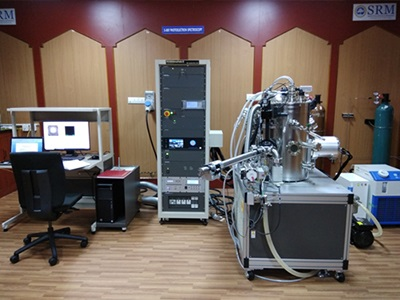
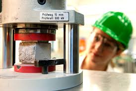
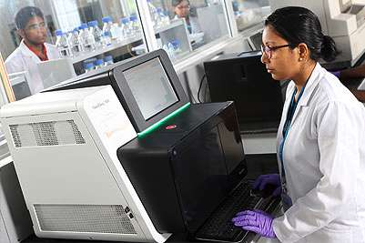

-

SRM Institute of Science and Technology (SRMIST) have taken various research initiatives over the years to mobilize the available knowledge resources for research and also, to come up strongly with innovative solutions.
All the research centers of SRMIST function in a cooperative manner to identify and initiate applied as well as cross-disciplinary research projects, create and combine patentable Intellectual Property (IP) components, design and develop prototypes & proof of concepts, manage and market products & solutions (through know-how transferred incubated companies), win and work to deliver funded research projects.
-

The Nanotechnology Research Centre (NRC) established with the aim of excelling to create state-of-the-art facilities for nanotechnology research, development and products. NRC has been equipped with multiple facilities covering contemporary equipment for fabrication/growth and characterization of cutting-edge nanostructured materials.
NRC focuses on breakthrough research in the following areas:
- Pulsed Laser deposition based epitaxial thin films
- Solution-processed Nanomaterials
- Growth of Nanofibers using electrospinning
- Intermetallic and Metal alloys
- Polycrystalline thin film nanostructures for novel applications
- Magnetic nanoparticles/nanostructures growth and characterization
-

The Center for Advanced Concrete Research (CACR) at SRM University was started in the year 2010, to carry out interdisciplinary research in the field of concrete, a most common material of construction in any built environment and a basic necessity for accelerated economic development. At present, Portland cement is very widely used as binder in concretes. But, the high content of 'Embodied Carbon Dioxide' (ECO2) and 'Embodied Energy' in the cement are the major reasons for recent laboratory studies all over the world to find alternate binders, as there is an urgent need for making the constructions more eco-friendly and sustainable.
The Research and Development activities in this area are therefore taken as main focus of the newly formed Center. Towards this, use of industrial wastes (such as slags, fly ash, etc,) along with modern materials (such as nano-silica, nano-cellulose fibres, nano-alumina, etc) would be explored using recent developments occurring in the fields of science and technology such as nano-technology, bio-technology, chemical engineering, including usage of modern analytical instruments such as XRD, various spectroscopes, DTA/TGA, etc.,
-

SRM University established an Earthquake Research cell (ERC) in July 2012 for Advanced Research on the causes for origin, occurrence and prediction of Earthquake by better understanding the geodynamical behavior of this natural disaster on the globe. Further to establish the non-plate tectonics causes for the earthquake through re-looking into the existing causes and to develop computer simulation model for geodynamic character, prediction, prevention and management model to reduce the damages on the Earth. Globally Computing and simulation models are playing critical and enabling roles in addressing many complex problems of earthquake research. Quick to realize this development, SRM University decided to formulate an action plan to develop the existing technology and infrastructure to understand and predict earthquakes with better accuracy.The Earthquake Research Cell is having an interdisciplinary approach towards the goal and the Research Scientific team comprises of Earth scientists, Geophysicist, Civil Engineers, Computer science Engineers, Chemical engineers, Nanotechnology Scientist and related experts. The institute has enough research facilities such as equipment, software and computing systems to address the above.